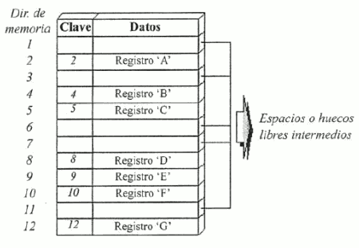
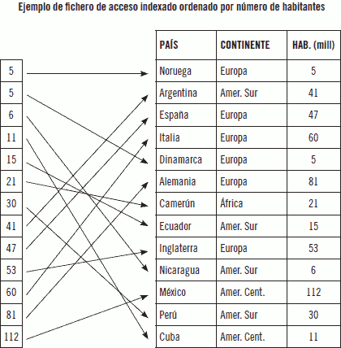

Fitxer o arxiu: conjunt d'informació relacionada, tractada com un tot i organitzada de forma estructurada. És una seqüència de dígits binaris que organitza informació relacionada amb un mateix aspecte
Les dades estan emmagatzemades de tal forma que es puguen afegir, suprimir, actualitzar o consultar individualment en qualsevol moment.
Com els fitxers solen ser molt voluminosos, només es poden emportar a la memòria principal parts d'ells per a poder processar-los. La quantitat d'informació que és transferida entre el suport en el qual s'emmagatzema el fitxer, i la memòria principal de l'ordinador, en una sola operació de lectura/gravació, rep el nom de registre físic o bloc.
Los datos están almacenados de tal forma que se puedan añadir, suprimir, actualizar o consultar individualmente en cualquier momento.
Como los ficheros suelen ser muy voluminosos, solo se pueden llevar a la memoria principal partes de ellos para poder procesarlos. La cantidad de información que es transferida entre el soporte en el que se almacena el fichero, y la memoria principal del ordenador, en una sola operación de lectura/grabación, recibe el nombre de registro físico o bloque.
Tipus de fitxers
Segons la manera d'accedir als fitxers, aquests poden ser classificats de diverses maneres:
- Fitxers seqüencials: es caracteritzen perquè els seus registres estan emmagatzemats de manera contigua, de manera, que l'única manera d'accedir a ell, és llegint un registre darrere l'altre des del principi fins al final. En els fitxers seqüencials sol haver-hi una marca indicativa de la fi del fitxer, que sol denominar-se EOF (End of File).
Aquest tipus de fitxers s'adapta a suports d'accés seqüencial com són les cintes magnètiques d'emmagatzematge de dades. També s'utilitza en els CD d'àudio i els DVD de vídeo, en els quals la música o les imatges s'emmagatzemen al llarg d'una espiral contínua.Després de col·locar un registre en un fitxer seqüencial, no es pot acurtar, allargar ni eliminar el registre. No obstant això, pot actualitzar (tornar a escriure) un registre si la longitud no canvia. Els nous registres s'afigen al final de l'arxiu.
Generalment s'usen en operacions per lots on es realitzen diverses operacions en una gran quantitat de registres o en tot l'arxiu. Altres característiques són:
- Aprofiten al màxim el suport d'emmagatzematge, al no deixar buits buits.
- Es poden gravar en qualsevol tipus de suport, tant en seqüencials com adreçables.
- Tots els llenguatges de programació disposen d'instruccions per a treballar amb aquesta mena de fitxers.
- S'obrin per a lectura o per a escriptura. L'escriptura només es fa al final de l'arxiu.
- Per a modificar un registre cal crear un arxiu nou amb tots els registres però modificant els que han canviat. No es pot modificar només un registre.
- Fitxers d'accés directe: cada registre té un número de registre que identifica la seua ordre en l'arxiu. El número de registre és un valor sencer que s'ha d'especificar quan es llig o s'escriu el registre. Els registres es numeren seqüencialment. El primer registre és el número 1. Els registres no necessiten ser llegits o escrits en l'ordre dels seus números de registre. Per exemple, els registres 9, 5 i 11 es poden escriure en eixe ordre sense escriure els registres intermedis. Tots els registres d'un arxiu connectat per a accés directe han de tindre la mateixa longitud. Altres característiques són:
-
Posicionament immediat.
-
Obertura del fitxer en mode mixt, per a lectura i escriptura.
-
Permeten múltiples usuaris utilitzant-los.
-
Permet esborrament, actualització i inserció directa.
-
Permeten realitzar processos d'actualització en temps real.
-
- Fitxers indexats: es basen en la utilització d'índexs, que permeten l'accés a un registre del fitxer de manera directa, sense haver de llegir els anteriors. Aquests índexs són similars als dels llibres. Si ens interessa llegir un capítol concret podem recórrer a l'índex que ens diu en què pàgina comença, i obrim el llibre per eixa pàgina, sense haver de mirar en totes les pàgines anteriors per a localitzar-lo.
Per tant, existirà una zona de registres en la qual es troben les dades de l'arxiu i una zona d'índexs, que conté una taula amb les claus dels registres i les posicions on es troben els mateixos. La taula d'índexs estarà ordenada pel camp clau.
La taula d'índexs serà carregada en memòria principal per a realitzar en ella la cerca de la fila corresponent a la clau del registre a trobar, obtenint-se així la direcció on es troba el registre. Una vegada localitzada la direcció, només cal accedir a la zona de registres en el suport d'emmagatzematge i posicionar-nos en la direcció indicada. Com que la taula ha de preveure la inclusió de totes les direccions possibles de l'arxiu, el seu principal inconvenient resulta determinar la seua grandària i mantindre-la ordenada pels valors de la clau
Les característiques més rellevants d'un fitxer indexat, són les següents:
- El disseny del registre ha de tindre un camp, o combinació de camps, que permeta identificar cada registre de manera única, és a dir, que no puga haver-hi dos registres que tinguen la mateixa informació en ell. A aquest camp se'n diu camp clau i és el que servirà d'índex.
- Un mateix fitxer pot tindre mes d'un camp clau, però almenys un d'ells no admetrà valors duplicats i se'n diu clau primària. A les restants se'n diu claus alternatives.
- Permeten utilitzar el mode d'accés seqüencial i el mode d'accés directe per a llegir la informació guardada en els seus registres.
- Solament es pot gravar en un suport adreçable.Per exemple, un disc magnètic.
- Arxius plans: les dades s'emmagatzemen com a text sense format, sovint en una estructura similar a una taula amb files i columnes. Cada fila representa un sol registre, mentre que les columnes representen camps o atributs de les dades. Els formats més comuns per a arxius sense format són valors separats per comes (CSV), valors separats per tabuladors (TSV) i arxius de text sense format. Els arxius plans s'utilitzen àmpliament per la seua simplicitat, facilitat de lectura humana i compatibilitat amb diverses plataformes i aplicacions.
Per exemple, el programari de full de càlcul com Microsoft Excel o Google Sheets pot llegir i manipular fàcilment arxius plans, i els llenguatges de programació com Python o Java poden analitzar i processar fàcilment les dades utilitzant biblioteques integrades o de tercers.
S'empren comunament en operacions d'importació i exportació de dades, on les aplicacions o sistemes amb diversos mecanismes d'emmagatzematge de dades necessiten comunicar-se o transferir dades.